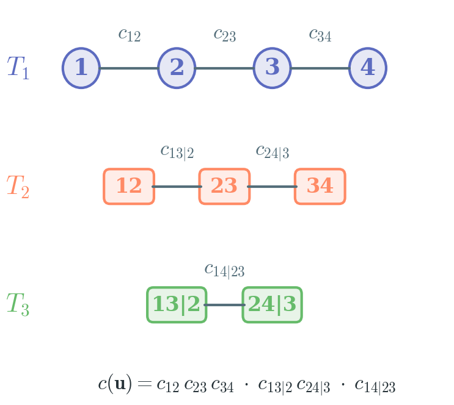

Reproducibility
Quick Commands
python scripts/download_pretrained.py --model-id vdc-denoiser-m64-v1
python examples/use_pretrained_model.py --model-id vdc-denoiser-m64-v1
python scripts/verify_pretrained_release.py --model-id vdc-denoiser-m64-v1 --device cpuMethod Overview
VDC amortizes bivariate copula estimation: a single pretrained U-Net maps empirical histograms to copula densities, IPFP projects to valid copulas, and the resulting edge operator is reused across all vine edges for density estimation, sampling, and information-theoretic decomposition.

D-Vine Factorization

Qualitative Copula Estimation

Model Release Checklist
- Package the bundle from the canonical checkpoint.
- Upload the bundle to a Hugging Face model repo.
- Update the packaged manifest with the public repo id and revision.
- Run the verification script against the published model.
Key Assumptions
- The pretrained model assumes continuous marginals and pseudo-observations in
[0,1]. - Vine fitting uses the simplifying assumption (constant conditional copulas).
- The released checkpoint is frozen and versioned.
- Default grid resolution is
m=64; probit transform available form=128.